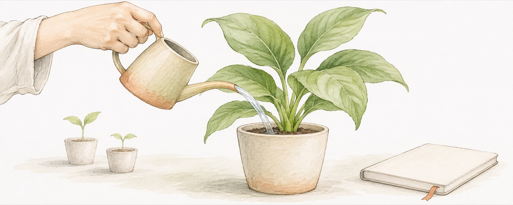

注意力花在哪，自己说了算

我一直想要一份在手机上就能听完的简报。可如果简报越做越长，省下的不过是搜资料的功夫，耗掉的还是自己的注意力。找来更多信息，和留出时间把它想透，根本是两码事。
道理我都懂——时间和注意力都很金贵，但真过起来，它们常常并没有花在我嘴上说最看重的事上。AI 圈的新动向、生物领域的新论文、别人写的好文章，哪一条看起来都有用。可到头来，我还是得自己拿主意：今天到底要搞明白哪一件事？
把好时间留给自己的问题
精力最集中的那段工夫，我想留给必须自己想透的问题：我到底想要什么？手头这个方向为什么值得接着往下干？外面的变化，跟我的兴趣和长处到底怎么接得上？这些问题都得静下来慢慢琢磨，信息塞得再满，也不会自动替我排好轻重缓急。
回头翻翻时间到底花去哪儿了，比空口说一句“这事很重要”实在得多。嘴上最看重的问题，这周到底分到了几小时？新看的东西，是真让我改了某个判断，还是看完一条接着刷下一条？我经常拿这两个问题反问自己。
少花时间找，多留时间想
找线索、理资料、把不同观点摆在一起对照，这些活我都愿意交给 AI。不过真要跟进 AI 自己的进展，我还是习惯直接看研究者本人和官方的一手发布，看他们到底做出了什么、自己怎么评价。凡是会影响决策的说法，都得去翻翻背后的依据。
资料理顺之后，还得给自己留出消化的时间。摘要能帮我判断值不值得点进去，但替代不了细节。有的话题知道个大概就够了，有的必须把原文从头读到尾——该读多深，得看当下要做什么决定。
平时冒出什么念头，我会先记在手机里，脑子腾空了，接着干手头的活。不过记下来是一回事，要不要顺着它继续想，是另一回事。存进备忘录之后，还得再挑一遍，看它值不值得占掉我下一段注意力。
把注意力管好，也包括好好休息。什么时候专心干活，什么时候彻底放下，我都想由自己说了算，而且尽量别让两边互相打断。